ГОЛОВНА
ГОЛОВНА ІСТОРІЯ
ІСТОРІЯ  МЕШКАНЦІ
МЕШКАНЦІ ПЛАН
ПЛАН ВОЛОДІННЯ
ВОЛОДІННЯ ГАЛЕРЕЯ
ГАЛЕРЕЯ kononov1975so@gmail.com
kononov1975so@gmail.comПерелік феодальних володінь Півночі
| Дім | Замок | Володар | Статус | Герб |
|---|---|---|---|---|
| Старки | Вінтерфел | Еддард Старк | Гранд-лорд Півночі | 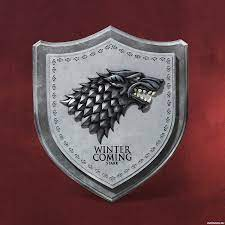 |
| Дастіни | Барроутон | Барбі Дастін | Леді-знаменосець |

|
| Мандерлі | Біла Гавань | Віман Мандерлі | Лорд-знаменосець |

|
| Флінти з Вдовиного Дозору | Вдовин Дозор | Ліесса Флінт | Леді-знаменосець |

|
| Вайтхілли | Вершина | Ладд Вайтхілл | Лорд-знаменосець |

|
| Болтони | Дредфорт | Русе Болтон | Лорд-знаменосець |

|
| Стаути | Златотраввя | Харвуд Стаут | Васал Дастінів |

|
| Карстарки | Кархолд | Рікард Кастарк | Лорд-знаменосець |

|
| Мармонти | Садиба Мармонтів | Мейдж Мармонд | Леді-знаменосець |

|
| Амбери | Останнє вогнище | Джон Амбер | Лорд-знаменосець |

|
| Рісвелли | Джерела | Родрік Рісвелл | Лорд-знаменосець |

|
| Сервіни | Замок Сервінів | Мейджер Сервін | Лорд-знаменосець |

|
| Локки | Старий замок | Ондрі Локк | Лорд-знаменосець |

|
| Слейти | Чорна Заводь | ? | Лорд-знаменосець |

|
| Флінти на Крем'яному Пальці | Крем'яний Палець | ? | Лорд-знаменосець |

|
| Хорнвуди | Хорнвуд | Халліс Хорнвуд | Лорд-знаменосець | 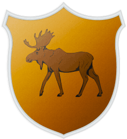 |
| Гловери | Темнолісся | Галбарт Гловер | Володар |

|
| Толхарти | Торрхенова Частка | Сір Хелман Толхарт | Володар |

|
| Форрестери | Залізний Горб | Грегор Форрестер | Васал Гловерів |

|
| Боули | ? | ? | Васал Гловерів |

|
| Бранчі | ? | ? | Васал Гловерів |
|
| Вудси | ? | ? | Васал Гловерів |
|
| Берлі | ? | Марлін Дорнвуд | Лорд-знаменосець |

|
| Вулли | ? | Х'юго Вулл | Лорд-знаменосець | 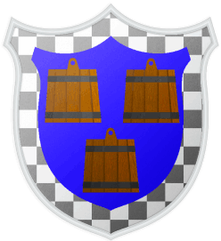 |
| Ліддли | ? | Торрен Ліддл | Лорд-знаменосець | 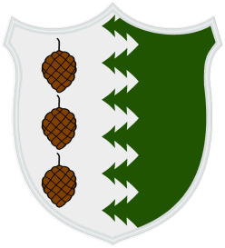 |
| Норрі | ? | Брандон Норрі | Лорд-знаменосець | 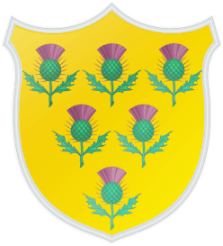 |
| Нотти | ? | ? | Лорд-знаменосець | 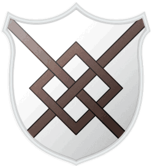 |
| Перші Флінти | ? | Торгент Флінт | Лорд-знаменосець |
|
| Харклеї | ? | ? | Лорд-знаменосець | |
| Ріди | Сіроводдя | Хоулен Рід | Лорд-знаменосець |

|
| Блекмайри | ? | ? | Васал Рідів |
|
| Боггси | ? | ? | Васал Рідів |
|
| Грінгуди | ? | ? | Васал Рідів |
|
| Квагги | ? | ? | Васал Рідів |
|
| Креї | ? | ? | Васал Рідів |
|
| Піти | ? | ? | Васал Рідів |
|
| Фенни | ? | ? | Васал Рідів |
|
| Айронсміти | ? | ? | Лорд-знаменосець | 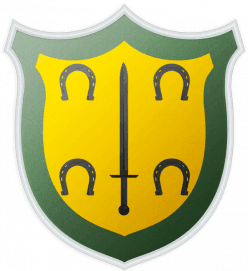 |
| Вулфілди | ? | ? | Лорд-знаменосець | 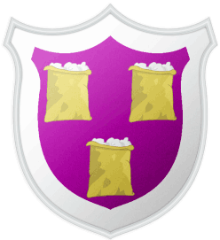 |
| Кассели | ? | Родрік Кассель | Лорд-знаменосець | 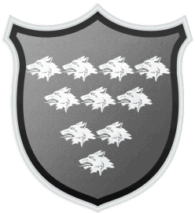 |
| Кондони | ? | ? | Васали Сервінів | 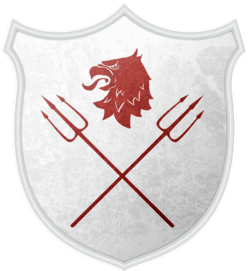 |
| Лайтфути | ? | ? | Лорд-знаменосець |

|
| Лейки | ? | ? | Лорд-знаменосець | 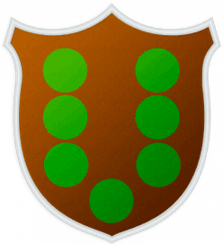 |
| Лонги | ? | ? | Лорд-знаменосець |
|
| Марші | ? | ? | Лорд-знаменосець | 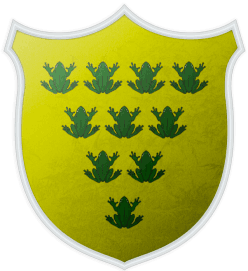 |
| Моллени | ? | ? | Лорд-знаменосець | 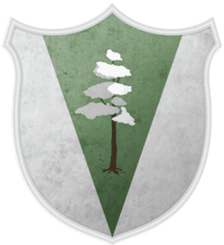 |
| Мосси | ? | ? | Лорд-знаменосець | 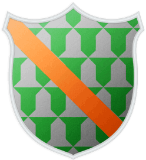 |
| Овертони | ? | ? | Лорд-знаменосець | 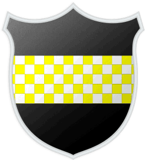 |
| Пулі | ? | ? | Лорд-знаменосець | 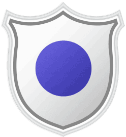 |
| Вотермени | ? | ? | Лорд-знаменосець | 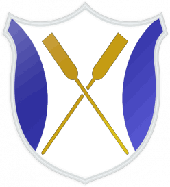 |
| Уеллси | ? | ? | Лорд-знаменосець | 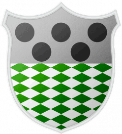 |
| Холти | ? | ? | Лорд-знаменосець |
|
| Ешвуди | ? | ? | Лорд-знаменосець |
|
| Стейни | Плавник | ? | Лорд-знаменосець |

|
| Магнари | Королівський Дім | ? | Лорд-знаменосець |

|
| Кроули | Надра | ? | Лорд-знаменосець |

|

КОМЕНТАРІ
Знаменосець (англ. bannerman) - васал, феодал-землевласник у Вестеросі, що знаходиться в підпорядкованому ставленні до більш
високопоставленого феодалу-сюзерену і зобов'язаний йому військовою службою; знаменосці присягають своїм сюзеренам на вірність. Термін
«знаменосець» має військовий сенс і означає, що лорди та лицарі такого рангу на війні командують власними загонами, кожен під своїм власним
прапором. Молодші брати лорда також стають його знаменосцями. Процедура збору військ називається «скликання знамен» — сюзерен направляє
своїм васалам наказ прибути в армію з такою кількістю людей та зброї, яку вони зможуть зібрати.
Володар, власник (англ. Master) - титул, який носять деякі дворяни-землевласники Вестероса та Есоса.
За своїм значенням цей титул може бути прирівняний до титулу ленного лицаря; подібно до ленних лицарів, це дворяни, що отримали від
сюзерена земельний льон і є знаменосцями лорда. Більшою мірою титул володаря поширений у регіонах, де сильні лицарські традиции.
У цілому нині це менш престижний титул, ніж титул лорда. Можливо, що власники, як і лені лицарі, немає «права в'язниці і шибениці» і що
неспроможні вести суд і стратити розбійників і злочинців у землях.
У деяких випадках титул володаря має і лорд (Боррелли, Веларіони) або навіть король (Лораки і в минулому Айронвуди), але ймовірно їх титул
означає не те саме, що титул володаря-землевласника, який не має титулу лорда.
Північний вершник, який отримує земельний наділ і стає прапороносцем лорда, називається власником. Стан власників займає Півночі те саме місце, як і стан лицарів-ленників інших
регіонах Семи Королівств. Власниками є, наприклад, Галбарт Гловер та Хелман Толхарт. По відношенню до власників може використовуватися звернення «сір», таке саме, як і до лицарів-ленників.
Лицарі-ленники.
За службу присяжний лицар може бути винагороджений земельним наділом із селянами і передавати цю землю та доходи від неї у спадок. Таким чином, лицар стає дрібним феодалом, лицарем-ленником (англ. landed knight). Власна земля і селяни роблять лицаря фінансово незалежним — він може вже не нести постійної служби при дворі сюзерена, а займатися мирним господарством у своєму маєтку і навіть брати до себе на службу переможніших лицарів, як це робив сир Юстас Осгрей. Багато благородних домів Семи Королівств - це не більше ніж сімейства лицарів-ленників; серед васалів великих лордів їх на порядки більше, ніж лордів дрібніших. Мандерлі, самі васали Старков, числять серед своїх васалів дюжину дрібних лордів і сотню лицарів-ленників, в Осгреїв у період їхньої найбільшої сили у васалах ходили двадцять дрібних лордів і сто лицарів-землевласників.
Під час війни лицар-ленник, як наказує йому васальний обов'язок, повинен з'явитися на службу до сюзерена з тими силами, які він зможе зібрати у своїх володіннях. Так, Тітос Ланністер зробив псаря Клігана, який врятував йому життя, своїм васалом-землевласником, подарувавши йому землі і замок; онук псаря, лицар-ленник Григор Кліган, служив Тайвіну Ланністер як один з військових командирів.
Лорди, що впали в немилість, можуть позбутися свого звання і також перетворитися на лицарів-ленників. Подібна історія трапилася з Коннінгтонами: якщо Джон Коннінгтон був лордом і правицею при королі Ейрісі II Таргарієні, то успадкував Гріфонье Гніздо і залишки земель свого дядька Роннет Коннінгтон іменувався лише Лицарем Грифонов.
Юстас Осгрей володів трьома селами, втім, маленькими, безіменними і здатними у сумі виставити лише вісім придатних солдатів мужчин. Лицарі-ленники брати Уоди, які присягнули на вірність Уентам з Харренхолла, володіли пагорбами межі Річкових земель з Королівськими.
Багаті лицарі-ленники можуть володіти замками і безліччю сіл, таким чином, у всьому перевершуючи дрібних лордів і будучи лордами у всьому, крім титулу. Так, Лицар Дев'яти Зірок Саймонд Темплтон під час конфлікту лордів Долини з Петиром Бейлішем зібрав і привів до Місячної Врати армію з тисячі людей. Для порівняння, у самого лорда Бейліша в його безіменному володінні на Перстах було всього четверо слуг і один стражник, а в селі на острові - дюжина селянських сімей. Втім, лицар-ленник, навіть багатий і знаменитий - не пара принцесі королівської крові, а дочки лицаря-ленника - не пара принцу.